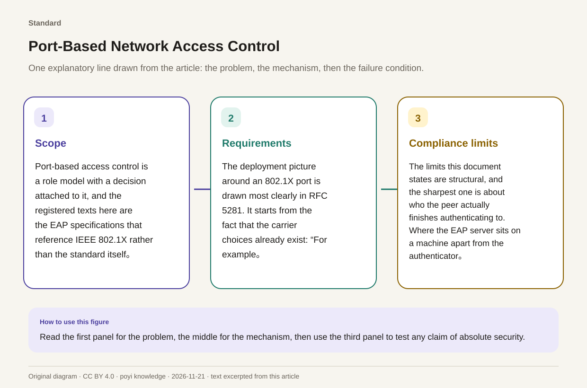
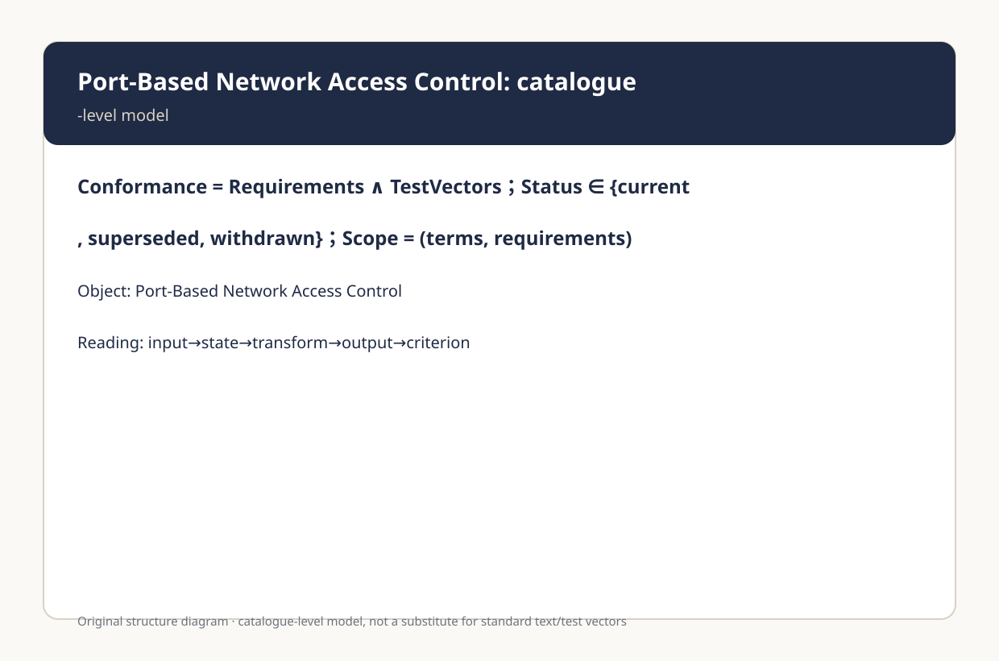

Principles
Standard: Port-Based Network Access Control (基于端口的网络访问控制). Port-based access control is a role model with a decision attached to it, and the registered texts here are the EAP specifications that reference IEEE 802.1X rather than the standard itself, so the model is described as those RFCs print it. RFC 3748 section 1.2 defines the two ends directly. The authenticator is “The end of the link initiating EAP authentication.” (line 188), and the peer is “The end of the link that responds to the authenticator.” (line 193); the same entry adds that in the IEEE standard's vocabulary “this end is known as the Supplicant.” (line 194), and the Supplicant entry reverses the mapping back at lines 196-199. A third role, the backend authentication server, is the entity that supplies the authentication service to an authenticator (lines 201-205). The encapsulation that carries the exchange over an IEEE 802 link is fixed by reference, not by reproduction: “The encapsulation of EAP over IEEE 802 is defined in [IEEE-802.1X].” (line 1035). The decision the port enforces is defined carefully, and it is not merely a cryptographic success: a successful authentication is an “exchange of EAP messages, as a result of which the authenticator decides to allow access by the peer, and the peer decides to use this access.” (lines 246-249), and the text warns that an authenticated peer may still be refused, with access “denied by the authenticator due to policy reasons.” (line 252). Finally the enforcement point is not a single binary gate. RFC 3748 describes it at lines 2787-2790: “authentication failure will result in denied access to the controlled port in [IEEE-802.1X], limited traffic may be permitted on the uncontrolled port.” That distinction - one port denied, another still carrying limited traffic - is what makes the state of an 802.1X port a policy question rather than a switch position.

Why it matters
The design choice is stated as an advantage first: “One of the advantages of the EAP architecture is its flexibility.” (rfc3748.txt:152). What the flexibility is bought with is spelled out in the next paragraph, at lines 155-160: instead of requiring the authenticator to be updated for every new authentication method, EAP permits a backend authentication server that may implement some or all of the methods, with the authenticator acting as a pass-through for some or all methods and peers. A port-control device therefore does not have to become a cryptographic endpoint to support a new method. The cost is named in the same list, at lines 464-466: placing the server apart from the authenticator complicates the security analysis and, if needed, key distribution. The architecture also narrows what the port can negotiate. Section 3.3, EAP Usage Within IEEE 802, says “The IEEE 802 encapsulation of EAP does not involve PPP, and IEEE 802.1X does not include support for link or network layer negotiations.” (lines 1036-1038); the consequence drawn at lines 1038-1040 is that non-EAP mechanisms such as PAP or CHAP cannot be negotiated inside 802.1X. This is not a limitation of the wire, it is a deliberate scoping decision: the layer carries an authentication exchange and nothing else. And the layer is chosen because the link type is: lines 144-150 record that EAP runs on dedicated links, switched circuits, wired and wireless media, that it has been implemented with switches and access points using IEEE 802, and that wired encapsulation is described in the IEEE standard, so the port-based model is the price of putting EAP directly onto a LAN.
Applications
The deployment picture around an 802.1X port is drawn most clearly in RFC 5281. It starts from the fact that the carrier choices already exist: “For example, PPP [RFC1661] or EAPOL [802.1X] may be used to transport EAP between client and access point; RADIUS [RFC2865] or Diameter [RFC3588] are used to transport EAP between access point and TTLS server.” (rfc5281.txt:680-683, with the four-space runs inside the quotation being the file's own line-wrap indentation). That sentence is the whole topology in one line pair - EAP over LANs on the access side, an AAA protocol on the server side - and EAPOL is the encapsulation the IEEE standard supplies. The method that RFC 5281 itself defines, “EAP-TTLS is an EAP (Extensible Authentication Protocol) method” (line 25), then shows what the port is used for in practice: it tunnels a TLS session whose data phase carries an arbitrary authentication mechanism, named at lines 33-40 as possibly PAP, CHAP, MS-CHAP or MS-CHAP-V2, which the abstract at lines 37-40 describes as allowing legacy password-based protocols to be used against existing authentication databases while protecting them against eavesdropping and man-in-the-middle attacks. Two honesty notes belong with this claim. First, this document is Informational (line 9), so it is evidence of the architecture, not of a requirement. Second, none of the three registered files contains any text of the IEEE standard itself: what they reproduce is its role names and its bibliographic identity, and rfc5281.txt:2710-2712 gives that identity as “IEEE Standard 802.1X-2004, December 2004.” - the edition these documents were written against.

Limits & attacks
The limits this document states are structural, and the sharpest one is about who the peer actually finishes authenticating to. Where the EAP server sits on a machine apart from the authenticator, “server, not between the peer and the authenticator.” and therefore, as lines 3003-3006 put it, it is not possible for the peer to validate the identity of “the authenticator that it is speaking to, using EAP alone.” (rfc3748.txt:3003-3006). The port-controlling device is thus trusted on other grounds; the method does not vouch for it. A second consequence is that the result tokens themselves are not a method: “Success and Failure packets MUST NOT be sent by an EAP authenticator” if the running method does not permit it to finish there (rfc3748.txt:1300-1302), and by default a peer silently discards a canned Success sent immediately on connection, which is what stops a rogue authenticator from bypassing mutual authentication by asserting success early (lines 1304-1309, where the word canned appears in the file's own quotation marks). The tokens are not acknowledged and may be lost, which is why a peer is told to treat a lower-layer success indication as evidence that a Success packet went missing (lines 1311-1315, 1049-1053). Third, negotiation is an attack surface: “In a negotiation attack, the attacker attempts to convince the peer” and to do it by pushing toward a weaker method, since EAP provides no protection for Nak Response packets (rfc3748.txt:2762-2766). The countermeasure in lines 2768-2776 is administrative rather than cryptographic - one authentication method per named peer identity, so a choice of methods never exists to be exploited. Fourth, the enforcement boundary leaks by design: “authentication failure will result in denied access to the controlled port in [IEEE-802.1X], limited traffic may be permitted on the uncontrolled port.” (lines 2787-2790). The uncontrolled port exists to carry the authentication itself, but it is also the part of the model an attacker always reaches.
History
RFC 5216 dates the model twice, once by its own header and once by the edition it cites. Its own header (lines 7-14) gives March 2008 and prints “Obsoletes: 2716”. Its informative reference list (lines 1615-1618) names the standard as “IEEE Standard 802.1X-2004”, “December 2004.” - so the retained copy of this row's evidence cites the 2004 edition, and nothing in these three files prints any later edition; the catalogue's own source line mentions a 2020 revision, which no registered text here attests, so it is not asserted. Independently of the bibliography, RFC 5216 carries its own copy of the role model, and it is worth comparing with RFC 3748: the authenticator is “The entity initiating EAP authentication.” (line 147), the peer is “The entity that responds to the authenticator.” (line 150), and in the IEEE standard's vocabulary “this entity is known as the Supplicant.” (line 151) - the same mapping, stated again by a different document, which is why the terminology is treated here as shared rather than as an EAP invention. What changed between the two RFCs is recorded in RFC 5216's own change list at lines 1749-1752: “As EAP is now in use with a variety of lower layers, not just PPP”, for which it was first designed, has been widened and reference is now made to other lower layers (lines 1749-1752); section 1 states that list to include “IEEE 802 wired networks” among them (lines 100-106), and the sentence stops before line 105 because line 105 breaks the token IEEE 802.11 across a hyphenated line end. One dated technical note rounds this out: EAP-TLS's own security claims table at lines 1302-1315 asserts mutual authentication and dictionary-attack protection while printing channel binding as No, which is the same gap RFC 3748 section 7.15 describes for pass-through authenticators.
Worked example & verification
Formal model and reproduction steps
[S=\min_i S_i,\quad S_i\in{\text{密钥强度},\text{分组安全},\text{实现安全}}]
Port-Based Network Access Control: the registered public parameters, key material or randomness, and message are mapped through the stated transformation to an output checked against the registered criterion. The worked example is a structural reproduction, not a new test vector; parameter ranges, standard versions and implementation details remain source-bound.
References
- Wikipedia search entry for 基于端口的网络访问控制. https://zh.wikipedia.org/w/index.php?search=%E5%9F%BA%E4%BA%8E%E7%AB%AF%E5%8F%A3%E7%9A%84%E7%BD%91%E7%BB%9C%E8%AE%BF%E9%97%AE%E6%8E%A7%E5%88%B6
- Handbook of Applied Cryptography (Menezes, van Oorschot, Vanstone). https://www.cacr.math.uwaterloo.ca/hac/